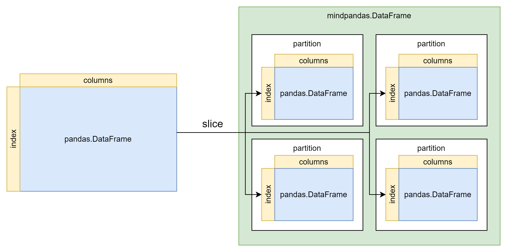
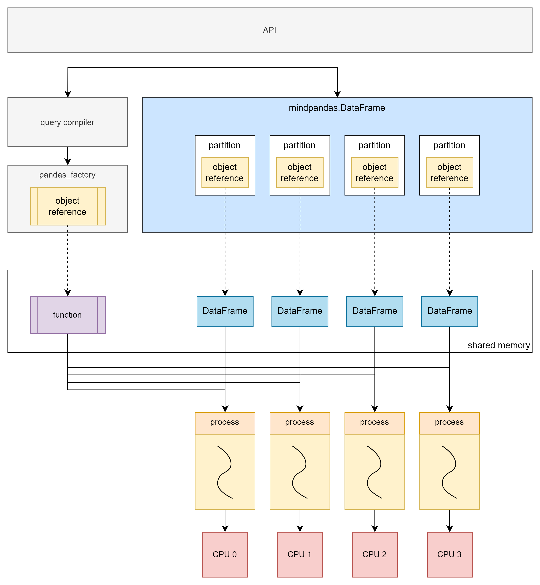

MindPandas执行模式介绍及配置说明

本文主要介绍MindPandas分布式并行模式的原理和使用方法。
MindPandas实现原理
MindPandas通过并行化的计算实现了对Pandas数据处理的加速。原理是首先对原始数据进行分片，再将API转化为通用计算范式（map、reduce、injective_map等），之后由后端并行化计算。当前MindPandas后端有两种执行模式，分别是多线程模式和多进程模式。
数据分片原理
将原始数据进行分片是并行计算的基础。下图展示了将pandas.DataFrame转换为mindpandas.DataFrame的过程，根据预设的partition_shape将原始数据分割为指定数量的partition，partition将作为后续并行计算的基本单位。

多线程模式原理
多线程模式基于Python多线程实现。每个数据分片和其对应的计算函数在一个线程中执行。

虽然Python的多线程存在全局解释器锁（GIL）限制，导致多线程无法有效利用多核。但数据量较小或处理IO密集型任务时，多线程后端仍能带来显著的性能提升。
多进程模式原理
多进程模式不受Python的全局解释器锁（GIL）限制，可以做到真正的并行计算。多进程模式与多线程模式原理类似，不同的是在对原始数据进行切片后，会将分片存入分布式计算引擎的共享内存中，mindpandas.DataFrame中存放的则是分片所对应的object reference。
当需要进行计算时，会将计算函数也存入分布式计算引擎的共享内存中，之后将计算函数对应的object reference与分片对应的object reference作为一个任务提交到分布式计算引擎，所有任务会由分布式计算引擎统一调度，以多进程的形式异步并行执行。
单机多进程原理

多进程模式可以充分利用多核，从而实现数倍到数十倍不等的性能提升。因此多进程模式能够高效地应对数据量较大的场景。但由于进程创建、调度等开销，在处理的数据量较小时性能可能会受到影响。
多机多进程原理

多机多进程模式下，计算在多台服务器组成的集群上执行，可以充分利用多机的资源完成计算任务，突破单机的资源限制。
MindPandas执行模式配置
数据分片配置
MindPandas支持用户根据实际使用情况配置分片的shape，用户可以使用set_partition_shape自定义分片的行数与列数。
import mindpandas as pd
pd.set_partition_shape((16, 2))
df = pd.read_csv('data.csv')
df_mean = df.mean()
多线程模式配置
MindPandas的多线程模式使用方法如下所示：
import mindpandas as pd
pd.set_concurrency_mode('multithread') # MindPandas will use multithread as backend
df = pd.read_csv('data.csv')
df_mean = df.mean()
多进程模式配置
安装MindPandas时，内置的分布式计算引擎也已经同步安装完成，可以在控制台使用指令yrctl访问。
注意：多进程模式下请确保您启动的集群仅由您个人使用，与他人共同使用一个集群可能导致潜在的安全风险。
$ yrctl
Usage: yrctl [OPTIONS] COMMAND [ARGS]...
The distributed executor of MindPandas.
Options:
--help Show this message and exit.
Commands:
start used to start the fleeting cluster
stop used to stop the fleeting cluster
单机多进程模式配置
要使用分布式计算引擎，我们需要通过命令行启动服务部署单机集群。部署集群的命令示例如下：
yrctl start --master --address <address> --cpu <cpu> --datamem <datamem> --mem <mem>
yrctl start命令常用参数有：
--master：标志位，设置当前节点为master节点，集群中有且仅能有一个master节点，部署单机集群时必须设置此标志。--address：master节点的IP地址，本地运行时可以填写127.0.0.1，必填。--cpu：该节点上使用的CPU核数，每个CPU的权重为1000（例：若希望使用两个核，此参数值应设置为2000）。可选，默认使用所有可用核。--datamem：共享内存的大小，单位是MB。可选，默认使用当前空闲内存的25%。--mem：MindPandas使用的总内存（包含共享内存），单位是MB。可选，默认使用当前空闲内存的75%。
如需查看yrctl start的参数使用说明，可以通过yrctl start --help查看。
在启动集群前，请检查下列事项：
本机没有为master节点的IP地址配置http代理。如果有，请取消代理或将master节点的IP地址加入
$no_proxy环境变量中。本机没有其他的redis服务占用6379端口，否则会引起端口冲突。如有redis或其他端口冲突问题，请参考FAQ解决。
若集群部署成功，控制台回显的末尾应显示：
Succeeded to start!
集群部署完成后，在Python脚本中需要设置使用多进程后端运行。方法是调用set_concurrency_mode接口，设置mode为"multiprocess"，address参数填写master节点的IP地址。
注意：我们建议在
import mindpandas之后马上调用set_concurrency_mode进行并行模式的设置。在脚本运行过程中切换并行模式将可能导致程序出错。
import mindpandas as pd
pd.set_concurrency_mode(mode="multiprocess", address="127.0.0.1")
要停止分布式计算引擎，请使用yrctl stop命令：
$ yrctl stop --help
Usage: yrctl stop [OPTIONS]
used to stop the fleeting cluster
Options:
--help Show this message and exit.
成功停止分布式计算引擎后，回显中末尾应显示：
Succeeded to stop!
多机多进程模式使用
MindPandas的多进程后端支持在多机上搭建集群，并进行分布式计算。集群由一个master节点和多个worker节点组成，集群中的每台机器上都需要单独启动服务。启动方式与单机多进程模式相同，但必须先启动master节点，然后再启动其他worker节点。
启动master节点：
yrctl start --master --address <address>
其中address为master节点的IP地址。
启动worker节点：
yrctl start --address=<address>
其中address为master节点的IP地址，若启动过程中遇到部署失败的问题，请参考FAQ。
集群部署完毕后，在Python脚本中，如下列代码所示设置使用"multiprocess"后端，address为集群中master节点的IP地址。
import mindpandas as pd
pd.set_concurrency_mode("multiprocess", address="<master_ip>")
停止集群的命令如下，需要在master节点和每个worker节点上分别执行：
yrctl stop
自适应并发功能
由于在数据量较小时，单进程计算的性能已经足够优秀。多进程计算的并行收益常常小于使用多进程的额外开销，所以MindPandas加入了自适应并发功能，此功能开启时，MindPandas会根据数据大小自适应切换并发模式以提升性能。
开启自适应并发功能
自适应并发功能默认设置为关闭，可以在Python脚本中通过set_adaptive_concurrency接口开启该功能：
import mindpandas as pd
pd.set_adaptive_concurrency(True)
触发条件
自适应并发功能开启后，自动切换并行模式的条件如下：
读取小于18MB的csv文件时会采用多线程模式，其它情况使用多进程模式。
使用
pandas.DataFrame初始化的mindpandas.DataFrame，内存占用小于1GB的将使用多线程模式，其它情况使用多进程模式。使用
numpy.ndarray初始化的mindpandas.DataFrame，内存占用小于1GB的将使用多线程模式，其它情况使用多进程模式。
注意事项
自适应并发功能被启动后，并行模式和分片的shape均由MindPandas自主调整，用户无法再使用
set_concurrency_mode对并发模式进行修改。set_adaptive_concurrency(True)应在Python脚本开头调用。在设置
set_adaptive_concurrency(True)后，除非Python脚本已运行完成，不建议用户将自适应并发功能切换回False。
使用限制
自适应并发功能目前不支持来自
merge、concat或join等操作所创建的DataFrame。自适应并发功能开启前初始化或读入的DataFrame/Series的并发模式无法被更改。
自适应并发功能目前使用特定的分片形状，即多线程模式采用(2, 2)的分片，多进程模式采用(16, 16)的分片。
除
read_csv之外的其他I/O操作，例如read_feather，目前不支持自适应并发功能。